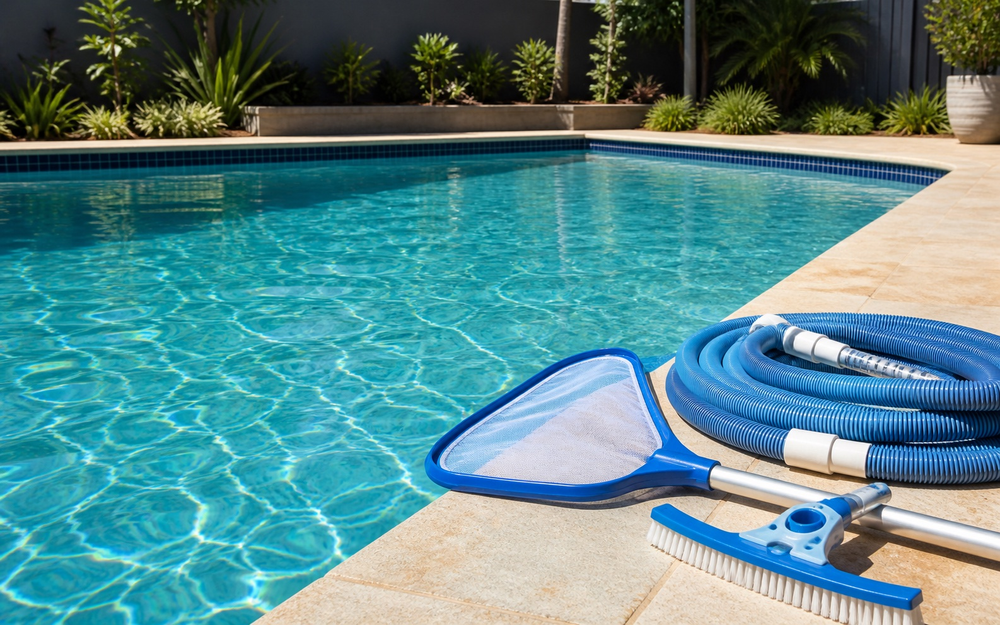

Scheduled Pool Servicing
Routine pool cleaning, skimming, vacuuming, brushing, basket cleaning and water balancing.
Sunnyside delivers comprehensive pool services for homeowners who want clear water, reliable equipment and renovation solutions completed with technical precision.
Every service is designed to identify the issue, utilise the correct method and protect the long-term condition of your pool.
Routine pool cleaning, skimming, vacuuming, brushing, basket cleaning and water balancing.
Algae treatment, filtration setup, sediment removal planning and chemical rebalancing.
Technical assessment of pH, chlorine, alkalinity and water condition to protect swimmers and equipment.
Pump, filter, chlorinator, cleaner and circulation checks to locate faults and recommend the correct repair path.
Focused clean-ups after storms, property handovers, heavy use or periods of neglected maintenance.
Surface restoration, fibreglass renovation support, equipment upgrades and complete system assessments.

Sunnyside services standard residential pools, with recommendations based on the water condition, circulation, filtration and equipment installed at each property.


Sunnyside provides professional solutions for ageing, damaged and outdated pools, including surface restoration, fibreglass renovations, equipment upgrades and complete system assessments.
Every renovation project commences with a detailed inspection so the correct renovation solution can be identified before work proceeds.
Arrange a quotation and restore your pool with confidence.
Call 0437 283 972A direct, technical process keeps the recommendation clear and the work properly scoped.
Review water condition, equipment, access, surface condition and the customer outcome required.
Identify whether the issue is chemical, mechanical, filtration-related, structural or maintenance-related.
Utilise the appropriate service, repair or renovation pathway and communicate the next step clearly.
Call Daniel to discuss the right service, repair or renovation pathway for your Perth pool.